Kishan Rajoria
I take problems from hand calculations, through CAD and simulation, to a physical prototype, then test it against the prediction.
Smart Glove: a low-cost wearable for home hand rehabilitation
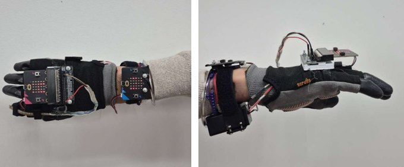
The problem
Commercial rehabilitation gloves work, but they cost far more than most patients or primary care can afford. Manual goniometry is cheap, but it only gives static readings with 5–7° of error. The aim was a low-cost glove that tracks finger flexion and 3D wrist motion in real time, for use at home.
My approach
Building on three earlier Cardiff iterations, I redesigned the hardware for durability and repeatable sensor placement, added finger tracking with a flex sensor, and wrote the MATLAB pipeline that calibrates, filters and plots the data live.
System architecture
Design changes I made
| Change | Why it mattered |
|---|---|
| Glove-on-glove build | Wiring soldered, heat-shrunk and routed between two glove layers, sized to full wrist travel, so nothing snags or pulls on a connection. |
| 3D-printed anchors | A curved PLA mount for the micro:bit and two flex-sensor holders keep the bend radius consistent between tests. |
| Edge connector | A friction-locked breakout replaced alligator clips, ending signal dropouts and exposing spare GPIO for more fingers or haptics. |
| PIP relief hole | User testing showed the outer glove resisted flexion. A cut-out at the joint lets the sensor read the true range of motion. |
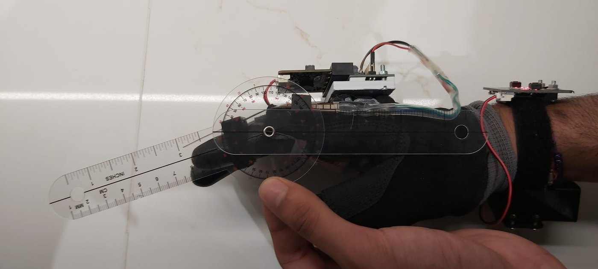
Finger test
Calibrated resistance against angle in 20° steps and fitted a linear model (R = 1.71θ + 613.7), then compared live readings with goniometer angles.
Wrist test
Calibrated both magnetometers by ellipsoid fitting (MATLAB magcal), logged repeated flexion/extension, deviation and rotation, and computed relative Euler angles between hand and wrist.
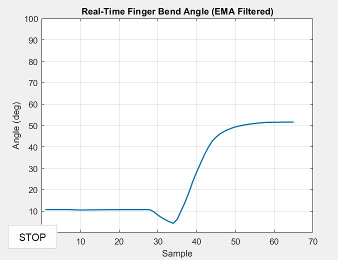
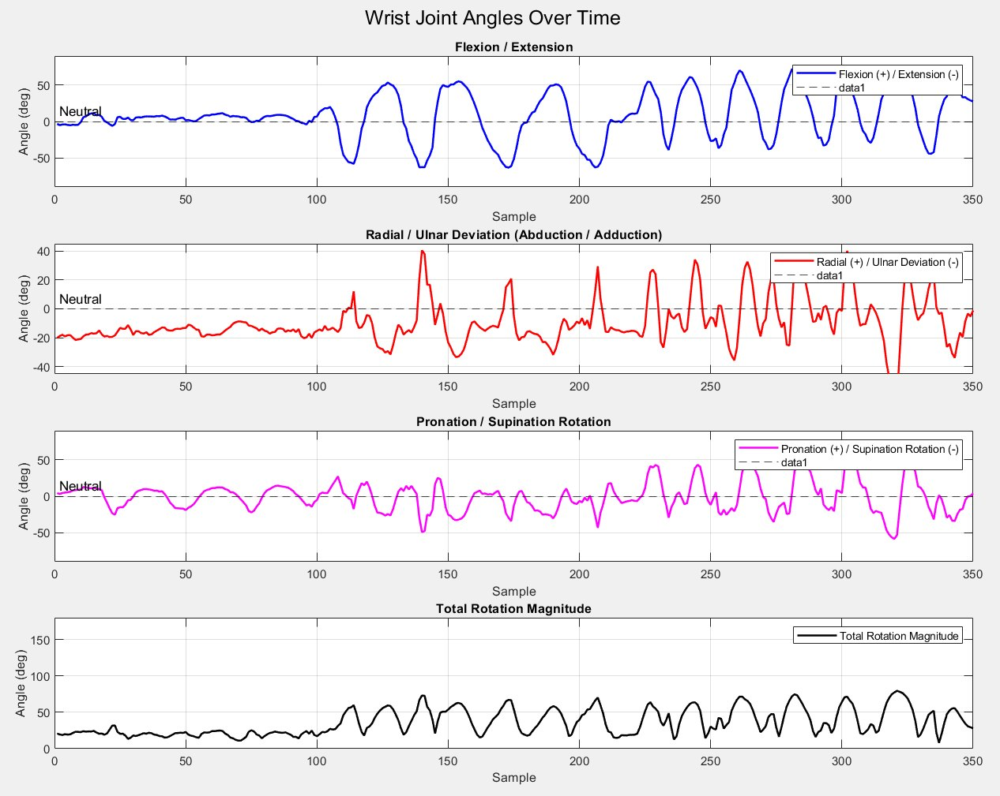
What the data showed
- Resistance flattened at high bend (741 Ω at 80°, 770 Ω at 100°), so a linear calibration under-reads beyond 60°.
- Two-stage filtering removed noise but added a short lag on fast movements.
- Wrist angles depended on starting arm orientation, which gave implausible values in one test.
What I would do next
- Replace the linear fit with a polynomial calibration, recalibrated each session.
- Add a gyroscope (9-axis IMU) for sensor fusion and faster movements.
- Plan for MDR 2017/745 and GDPR before any move toward clinical use.
Lightweight two-stage reduction gearbox for an electric race car
The brief
Design the output stage of a two-stage reduction gearbox for an electric motorsport vehicle, then take as much mass as possible out of the gear, shaft and flange without exceeding the allowable stress. Less rotating mass means less inertia, quicker acceleration and lower losses.
How we approached it
Size every component by hand, model it in SolidWorks, then use ANSYS static structural analysis and topology optimisation to remove material where stress was low, checking each change against the limit.
My contribution
I helped work through the theory calculations that sized the components before the CAD model went into FEA. I then helped with the iterative design changes, refining the model through repeated FEA runs so it could carry a larger load.
- Input
- 100 N·m at 6 000 rpm
- Gear loads
- Ft = 4.21 kN / 7.21 kN
- Gear sizing
- Lewis bending equation with velocity factor; face width checked between 3p and 5p
- Shaft
- Tresca and von Mises criteria: ≈16 mm minimum diameter
- Bearings
- SKF NU 2304 ECP cylindrical roller: L10h ≈ 19 100 h, static safety S0 = 3.22 (≥ 2.5)
- Fatigue
- Marin endurance-limit factors; Kt at shoulders and keyways
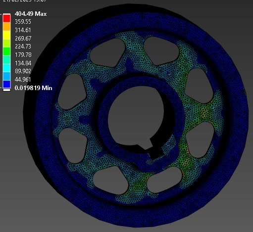
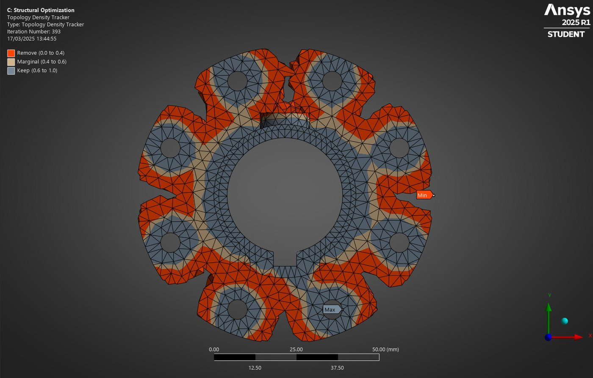
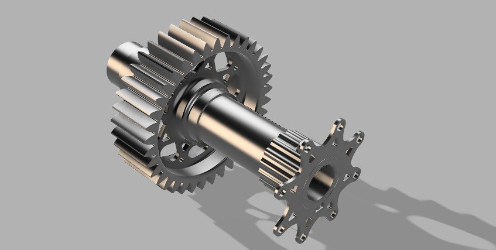
Problem: stress spikes at the keyways
Peak stress sat in the keyway corners even with a finer mesh. We identified it as a singularity, averaged stress across the keyway face, and confirmed the value was within the allowable.
Problem: imbalance at speed
The asymmetric cut-outs moved the centre of mass off the axis of rotation. A counterweight on the gear rim, where each gram has the most effect, cut the offset from 2.1 mm to 0.012 mm.
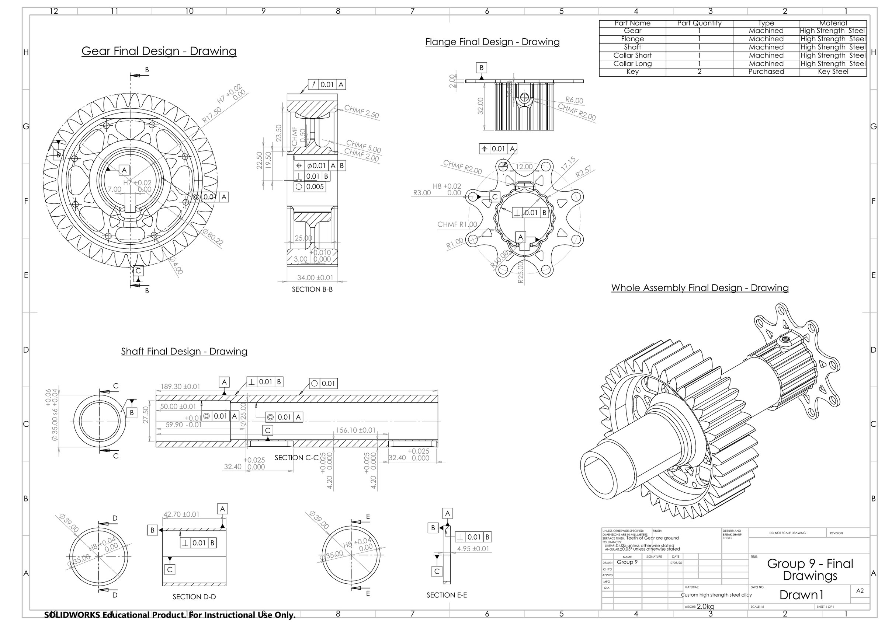
Does the FEA match reality? Load–deflection test of an SLS prototype
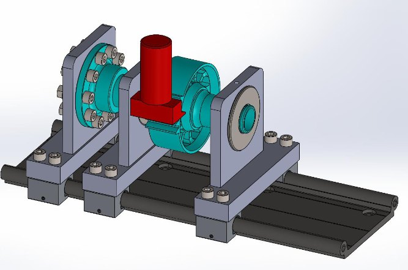
The gear, shaft and flange were SLS-printed in PA2200 nylon. Test loads were scaled from steel by the ratio of tensile strengths (45/600 MPa) and the same case was run in ANSYS. The rig's 10 mm travel limit stopped the test at 334 N, so ten load points from the test were re-run in ANSYS for a direct comparison.
1 · Load path
As the part deflected, less of the applied force was transmitted, unlike the ideal fixed loading in FEA.
2 · Mesh quality
Checks were local to the keyways; global quality checks would have caught skewed elements.
3 · Anisotropy
The model assumed isotropic nylon, but SLS layers make the part weaker across them.
Modular indoor hydroponic system, designed for manufacture and assembly
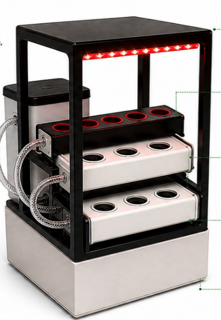
A countertop system for growing herbs and leafy greens all year without soil or sunlight, for people in flats with no outdoor space. Modules stack to about 3 m on the same 250 × 250 mm footprint.
My contribution. I helped shape the design, from the early ideas and concepts to the choice of parts, and helped build the prototype. I also assisted with the DFMA analysis that reduced the part count.
| Slide-rail stacking | Fastener-free, tool-free modules with a ±0.2 mm clearance fit for sliding assembly. |
| Gravity flow | One pump lifts nutrient to the top tray; a staircase layout returns it, so no extra pumps. |
| Printable geometry | Uniform 1.5 mm walls and R10 internal corners to reduce stress and print defects. |
| Interchangeable trays | 3-hole and 5-hole trays share one envelope and rail interface. |
| Assembly | Ten steps, no tools: slot-fit and push-fit throughout. |
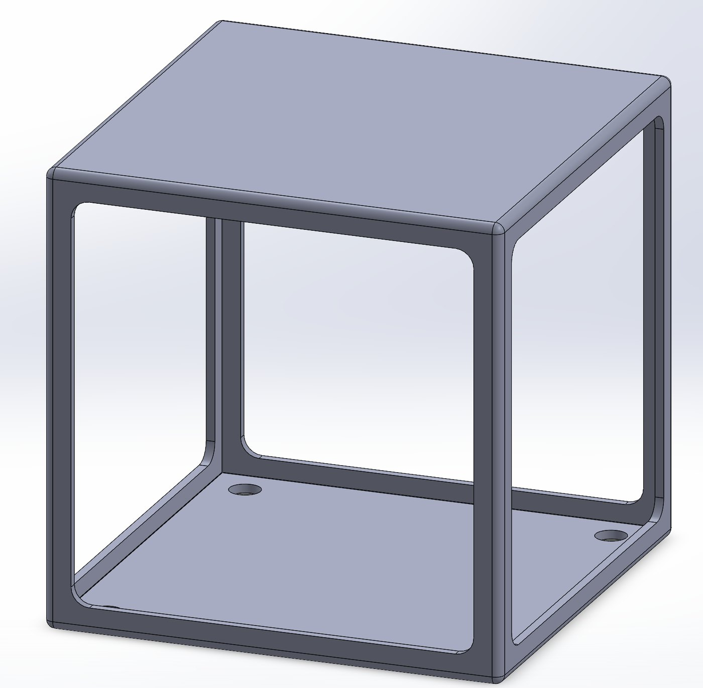
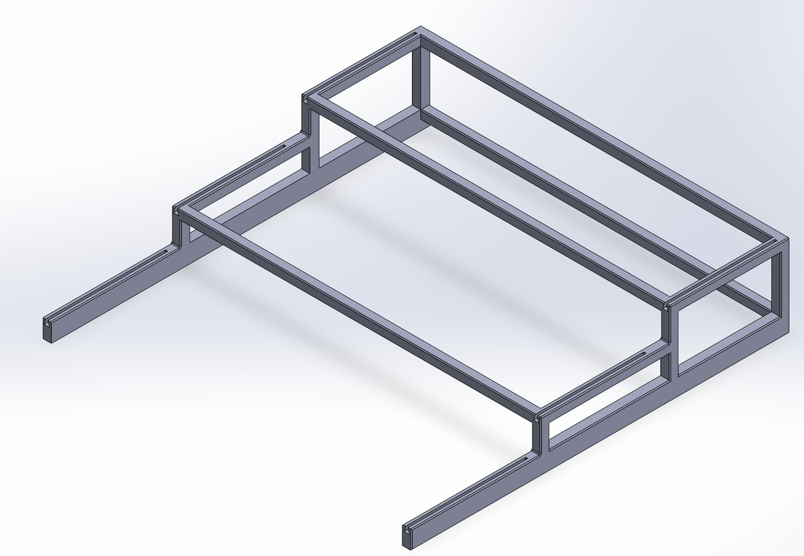
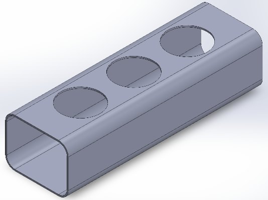
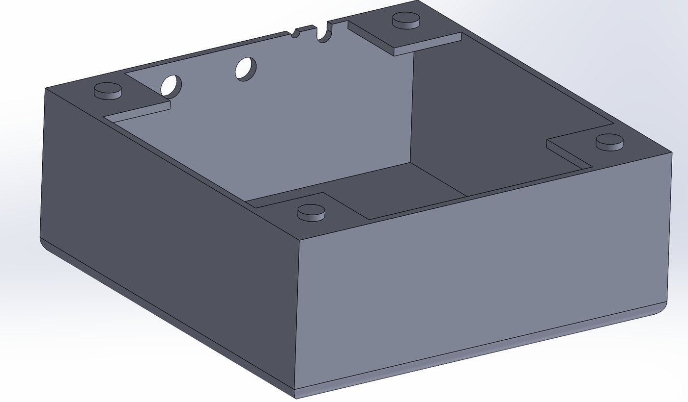
DFA: three redesign rounds
Part entries and assembly labour time per round. Net pots, end caps and tray holders were merged into the trays and frame; the five remaining candidates are bought-in parts.
DFM concurrent costing at 10 000 units
| Part | Cheapest route | Unit cost | Alternative | Unit cost |
|---|---|---|---|---|
| Reservoir | Structural foam moulding, HDPE | $4.35 | Injection moulding, PP | $5.84 |
| Frame | Structural foam moulding, HDPE | $4.93 | Injection moulding, PP | $6.44 |
| Tray | Thermoforming, PP | $1.27 | Injection moulding, PP (cheaper above ≈15 500 units) | $1.56 |
Reflection. Printed PLA is porous and softens with heat, so production parts should move to food-safe PP or HDPE. The slide rail was sensitive to print tolerances, which earlier prototyping would have caught.